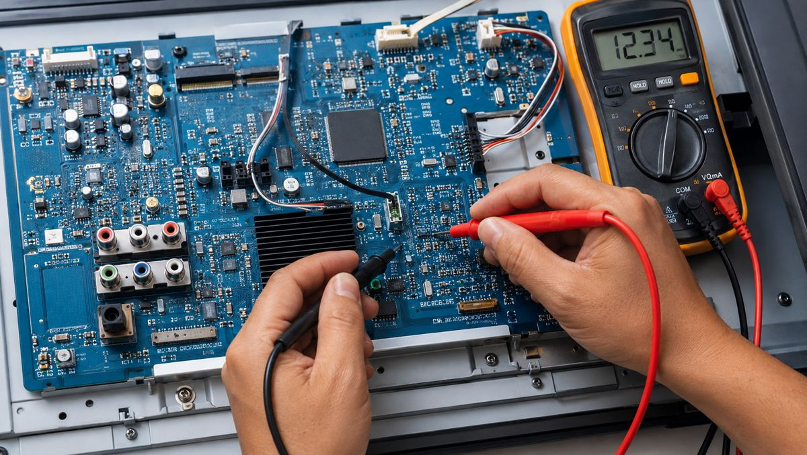
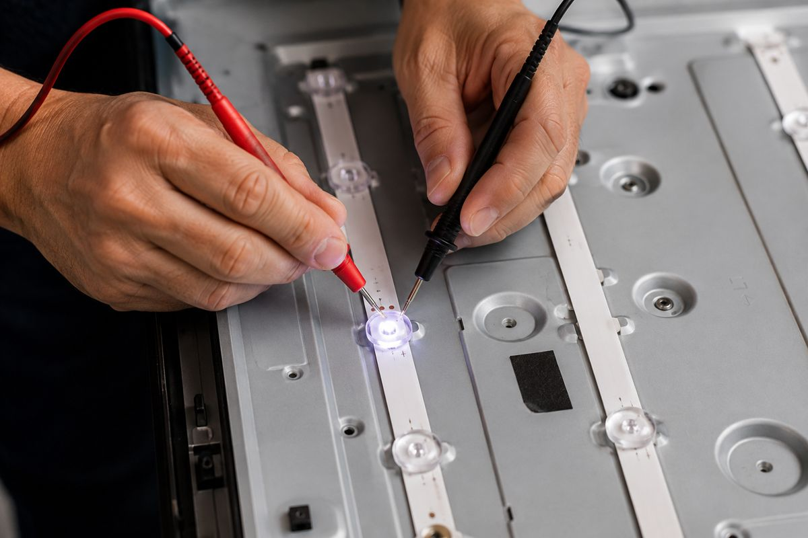

FALLA TÍPICA · NO ENCIENDEFuente de alimentación
Reparamos la fuente de su televisor. Es la falla más común cuando el TV no enciende: revisamos capacitores, reguladores y componentes quemados hasta devolverle el voltaje correcto.
SAN MIGUEL DE TUCUMÁN · DESDE 1997
Reparamos televisores LED, LCD y Smart TV. Diagnóstico real, repuestos que funcionan y trabajos garantizados.
SERVICIO DE REPARACIÓN
Diagnosticamos con instrumental real, no a ojo. Cada trabajo sale probado y con garantía.

FALLA TÍPICA · NO ENCIENDEReparamos la fuente de su televisor. Es la falla más común cuando el TV no enciende: revisamos capacitores, reguladores y componentes quemados hasta devolverle el voltaje correcto.

FALLA TÍPICA · SIN IMAGEN, CON SONIDOReparamos o sustituimos las tiras de led de la retroiluminación. Si el televisor tiene sonido pero la pantalla queda oscura o apagada, generalmente el origen está acá.
NUESTRA TRAYECTORIA
N Electrónica abre sus puertas como servicio técnico para hacer las reparaciones de Grabacentro S.A., una de las casas de comercio más grandes de esa época.
Con esa misma experiencia, seguimos como servicio técnico abierto al público en general, reparando televisores de todas las marcas y tecnologías.
CONTACTO
Escríbanos por WhatsApp con la marca y el modelo, o una foto de la falla, y le confirmamos el diagnóstico.
CÓMO LLEGAR